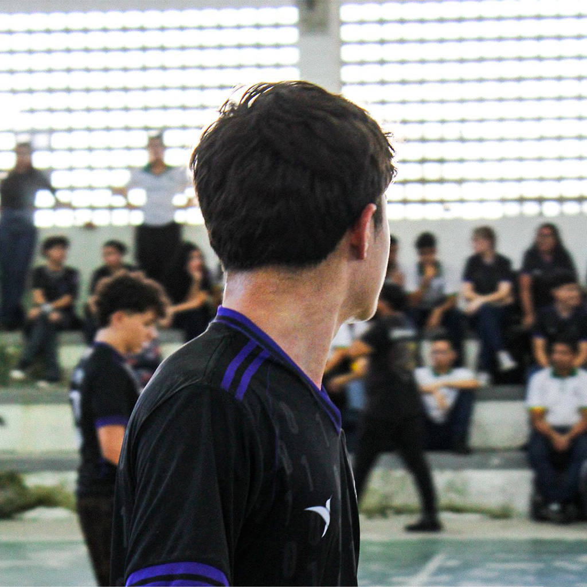

Acesse minhas redes:
Projeto Paulo ama o Ceará
Autor do desenvolvimento: Marcio Guilherme Araujo Gomes
O Projeto Paulo ama o Ceará foi pensado, projetado e desenvolvido com o propósito único e exclusivo de zoar com a cara do nosso querido professor Paulo Lindão (ou Ceará, para os mais próximos).
Paulo é sem sombra de dúvidas um dos torcedores mais fiés do Ceará, estando sempre presente no Castelão para assistir a cada partida do Vozão. Em casa, Paulo não deixa passar em branco nem uma partida do Vovô no Brasileirão, acompanhando cada jogo com sua linda e maravilhosa camisa alvinegra, a qual tanto ama.
E, Paulo, se é você que está lendo isso, saiba que foi tudo feito só pela resenha. 😁